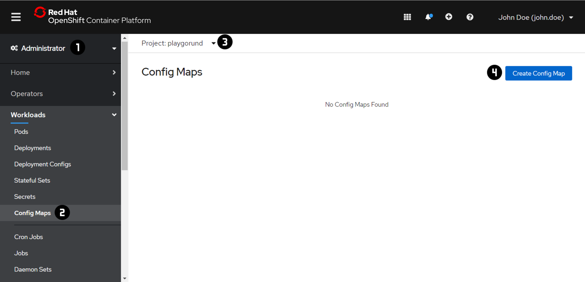
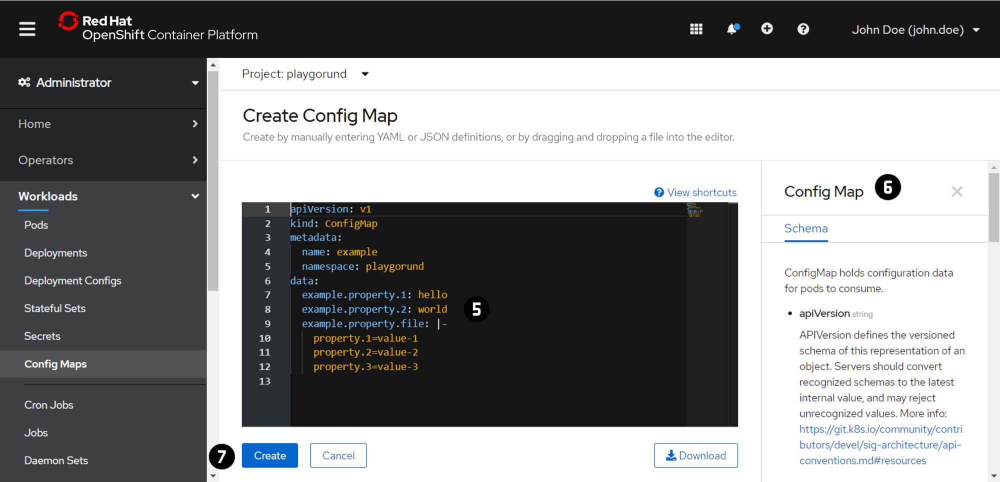
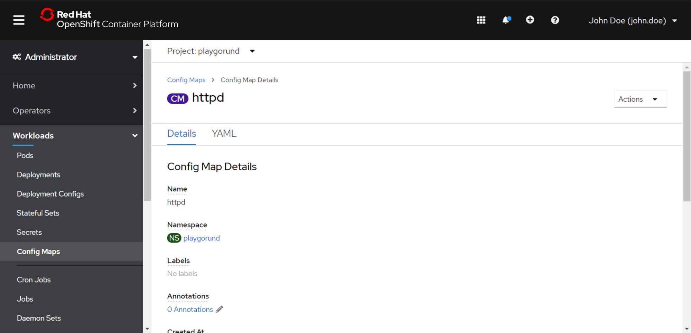
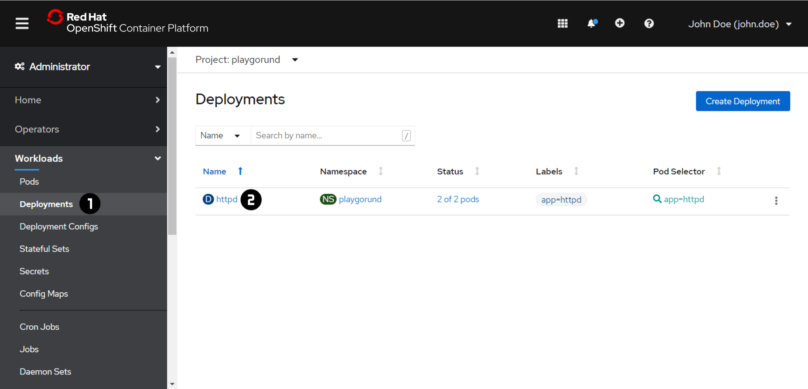
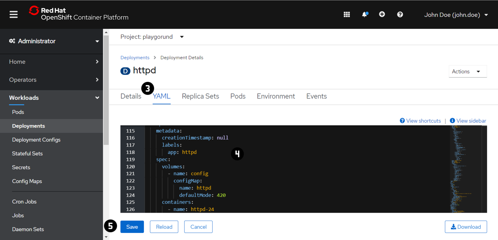

Exercise 4 - ConfigMaps¶
We want to change the index.html served by the Apache HTTP Server in order to personalize our website.
There are multiple approaches to achieve this:
- change the container image by adding the file during the build to the image (out of scope for this workshop)
- use a
ConfigMapto inject the file to the container in thePod
ConfigMap provides a mechanisms to inject containers with configuration data (entire files or single values) while keeping the containers unchanged.
Check out the OpenShift or Kubernetes Documentation for more information about ConfigMaps.
Note
For each exercise you can choose and only have to do either the 'Web Console' or the 'Command Line Interface (CLI)' section in oder to complete the exercise.
Create a ConfigMap¶
 
- Switch to the 'Administrator' view using the dropdown menu at .
- Navigate to 'Workloads' → 'Config Maps' .
- Switch to the your project using the dropdown menu at . In each of the exercise make sure that you are in your project context before you are making any changes.
- Press 'Create Config Map' .
-
Create a
ConfigMapwith theindex.htmlusing the content below:(replace<!DOCTYPE html> <html> <head> <title>John Doe</title> </head> <body> <h1>John Doe</h1> <p> Today I learned how to deploy my own website in the cloud using an Apache HTTP Server (httpd) running on OpenShift. </p> </body> </html>John Doewith your actual name - if you are John Doe you can skip this)Try to create the
ConfigMapdefinition file on your own using the template at and the additional schema informationSolution:
apiVersion: v1 kind: ConfigMap metadata: name: httpd data: index.html: |- <!DOCTYPE html> <html> <head> <title>John Doe</title> </head> <body> <h1>John Doe</h1> <p> Today I learned how to deploy my own website in the cloud using an Apache HTTP Server (httpd) running on OpenShift. </p> </body> </html> -
Press 'Create' .

Mount a ConfigMap¶
 
- Navigate to 'Workloads' → 'Deployments' .
- Open the 'Deployment Details' by clicking on the 'Name' .
- Switch to the 'YAML' tab .
- Add the highlighted parts to the
Deploymentdefintion file in the editor :apiVersion: apps/v1 kind: Deployment ... spec: ... template: metadata: creationTimestamp: null labels: app: httpd spec: volumes: - name: html configMap: name: <configmap name> containers: - image: ubi9/httpd-24:latest volumeMounts: - name: html mountPath: /var/www/html ... - Press 'Save' .
- Reload your web site using the URL of the
Routecreated in Exercise 3.
Important
At the beginning of the exercise make sure that you are in your project context.
oc project <project name>
Create a ConfigMap¶
- Create a
index.htmlfile using thevieditor with the following content:(replace<!DOCTYPE html> <html> <head> <title>John Doe</title> </head> <body> <h1>John Doe</h1> <p> Today I learned how to deploy my own website in the cloud using an Apache HTTP Server (httpd) running on OpenShift. </p> </body> </html>John Doewith your actual name - if you are John Doe you can skip this) -
Create a
ConfigMapwith theindex.html.Try to figure out how to create a new configmap named
httpdbased on a file usingoc create configmap -hSolution:
oc create configmap httpd --from-file=index.html
Inspect a ConfigMap¶
- Inspect the created
ConfigMapusingoc getandoc describe.oc get configmapsoc describe configmap <configmap name> - Also check the
ConfigMapin the Web Console.
Mount a ConfigMap¶
- Let's add the
ConfigMapto thePodtemplate in theDeployment. Theoc editcommand allows us to edit existing resources using thevieditor.oc edit deployment <deployment name> - Add the highlighted parts to the
Deployment:apiVersion: apps/v1 kind: Deployment ... spec: ... template: metadata: creationTimestamp: null labels: app: httpd spec: volumes: - name: html configMap: name: <configmap name> containers: - image: ubi9/httpd-24:latest volumeMounts: - name: html mountPath: /var/www/html ... - Store and close the file.
The configuration change triggers automatically a redeployment of all your
Pods- wait a couple of seconds until it is done. - Reload your web site using the URL of the
Routecreated in Exercise 3.
🎉 Congratulations, you have made it!¶
You have successfully deployed your first personal website in the cloud using OpenShift. 👏